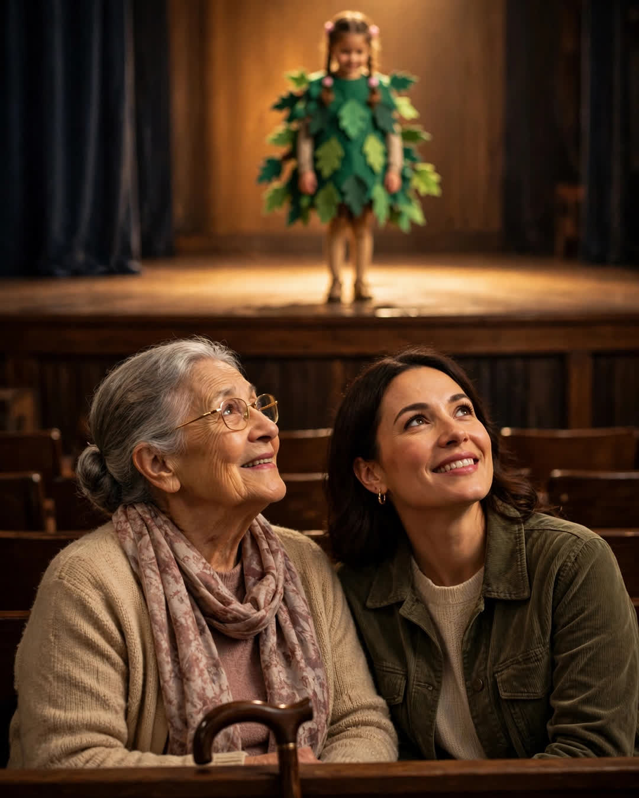

The Front Pew
A Clipp Kaili original story

For twelve years, my mother sat in the front pew of the school auditorium for every performance I was in, including the ones no loving parent should have had to survive.
She was there for the kindergarten pageant where I forgot my one line — "I am a snowflake" — and stood in felt silence for what witnesses described as a full minute; Mom mouthed the words from the front pew until I found them. She was there for the talent show where my card trick failed in three acts. She was there for the Christmas concert where I played saxophone with a skill level that our music teacher, in a moment of honesty he surely regrets, called "brave." She sat in that front pew through a forty-minute recorder ensemble. A recorder ensemble. Forty minutes. Saints have been canonized for less.
Her rule was simple and she stated it often: "Front row. Close enough that when you look for me, you don't have to look long." Other parents drifted to the back with their phones and their coffee. My mother arrived forty minutes early for everything, saved her drama for no one, and took the seat closest to the stage like it was assigned by law.
When I was sixteen and too cool for the front pew, I told her she could sit in the back like normal mothers. "Normal mothers are doing their best too, baby," she said, unmoved, and sat in the front anyway. I rolled my eyes. Then I looked out, mid-song, nervous — and there she was, close enough that I did not have to look long. My voice steadied. I have never told her that part.
Years do what they do. My daughter is six. Last month she was cast — her word, cast — as a tree in her school play. She had no lines, a costume of green felt, and enormous pride, and for three weeks she practiced standing still in our living room with her arms up like branches.
The morning of the play, I got a call from my mother. She lives across town now, walks with a cane since the hip, and does not drive at night. "What time should I be ready?" she asked.
"Mom, it's an elementary school play. She plays a tree. It lasts twenty minutes."
"And what time," she repeated, patient as scripture, "should I be ready?"
I picked her up at five for a six-thirty show. She wore her good coat, and brought a folder of programs from every performance of mine since 1998 to show my daughter in the car — evidence that this family takes trees seriously.
But here is the seat part, and the seat part is the whole story.
I had planned to save two seats. But my daughter came running from backstage in her felt leaves, found us, and announced to her teacher, loud enough for three rows to hear:
"That's my grandma's seat. Front pew. She has to be close, so I don't have to look long."
My mother sat down in that front pew like a queen taking a throne she had built by hand over forty years. And when the curtain rose and a small green tree stood among the snowflakes, swaying slightly, arms raised with total commitment — two women in the front row were already crying, in the seats love had been saving all along.
← Back to all stories